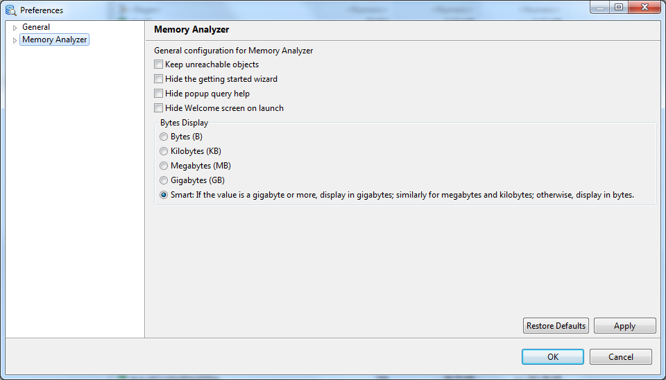

Well, analyzing big heap dumps can also require more heap space. Give it some more memory (possible by running on a 64-bit machine):
MemoryAnalyzer.exe -vmargs -Xmx4gAlternatively, edit the MemoryAnalyzer.ini to contain:
-vmargs -Xmx4g
For more details, check out the section Running Eclipse in the Help Center. It also contains more details if you are running on Mac OS X.
If you are running the Memory Analyzer inside your Eclipse SDK, you need to edit the eclipse.ini file.
T ≈ N * 28.25 + C * 1000 + P
P is the space used by the DTFJ or HPROF parsers. For a PHD file, the space could be:P ≈ C * 1000
Memory Analyzer uses additional memory for caching index files, so performance will be better if there is more memory available than the minimum required to parse a dump.Memory Analyzer has an architectural limit of 231 - 3 objects, a current limit of 231 - 8 = 2,147,483,640 objects, but has not been tested with that many objects. The current record is a heap dump file of 70Gbytes containing 1,160,000,000 objects, which was opened with Memory Analyzer running with a 64Gbyte heap.
The preference page is opened via a menu option.

- Keep unreachable objects
- Objects that appear unreachable from GC roots are not discarded in an early stage of Memory Analyzer processing, but are retained for further analysis.
- Hide the getting started wizard
- Controls whether to display a wizard for leak suspects, top components after opening a snapshot.
- Hide popup query help
- Do not display the help panel underneath the query wizard, unless F1 or the help button is pressed.
- Hide the Welcome screen on launch
- The welcome page has the 'Overview' and 'Tutorials' tabs and the 'Workbench' button. The welcome page is closed by going to the workbench. Selecting this option means that when Memory Analyzer is started the workbench is displayed first. The welcome page can be reopened from the workbench by:
- Bytes Display
-
There is a option (from MAT 1.5 onwards) to display bytes in B, KB, MB, GB, or Smart formats. The default is to always display in Bytes format to match the previous MAT behavior and not cause any confusion. The option can be changed in the Eclipse preference dialog or using -Dbytes_display=(bytes|kilobytes|megabytes|gigabytes|smart).
- Bytes (B)
- Memory counted in single bytes
- Kilobytes (KB)
- Memory counted in units of 1,024 bytes
- Megabytes (MB)
- Memory counted in units of 1,048,576 bytes
- Gigabytes (GB)
- Memory counted in units of 1,073,741,824 bytes
- Smart
- In Smart mode, if the value is a gigabyte or more, display in gigabytes; similarly for megabytes and kilobytes; otherwise, display in bytes.

-
Normally stack frames are just shown in the Thread overview and stacks query.
This option allows stack frames to be treated as objects which are then visible like any other Java object in a Memory Analyzer view.
- Normal
- Stack frames are just shown in the Thread overview and stacks query.
- Only stack frames as pseudo-objects
-
Stack frames are of type <stack frame>, size 0, with method names and source file
and line numbers via fields and a name resolver.
This is useful when looking at paths to and from objects via local variables as the stack frames are visible in the paths to GC roots queries.
- Stack frames as pseudo-objects and running methods as pseudo-classes
- Stack frames of are of type packageName.className.methodName(Signature)ReturnType extending <method> representing the method being executed,
of size the stack frame size, with source file and line number via fields and a name resolver,
and those methods are pseudo-classes of type <method type> of size 0.
This can be useful to find out which methods are currently running and how much stack space they take up. To examine running methods then take the histogram view, filter by '\(', then sort by instances or instance size.
- Stack frames as pseudo-objects and all methods as pseudo-classes
- Stack frames of are of type packageName.className.methodName(Signature)ReturnType extending <method>codeph> representing the method being executed,
of size the stack frame size, with source file and line number via fields and a name resolver,
and all methods are pseudo-classes of type <method type> of size based on the JITted and byte code sizes. The method sizes are then not part of the class size.
This can be useful to find out which methods have large JITted or byte code sizes. They can be viewed by going to the histogram view, then selecting <method type> and listing objects.
- By default, when MAT parses IBM system dumps, the size of classes includes some of the amount of native memory in the Java process (but outside of the Java heap) which is related to those classes such as native memory for bytecode and JIT compiled code for the class methods. Check this option to disable this calculation and only report Java heap usage.
-
By default, the HPROF parser runs in strict mode. This means that
any deviation in the file from the
HPROF specification
is treated as a severe error, an exception is thrown, and dump
processing stops. There is one exception to this rule which is
that we can reliably workaround the observed issue in
bug #404679
.
This is a change in behavior from previous releases when a warning was shown in the error log and processing continued. This default change was made to alert the user to a potential problem either with the file itself or a bug in the JVM or in MAT. You may choose to change the strictness of the parser:
- Strict
- Default. Any deviation from the HPROF specification causes an exception to be thrown and processing to stop (with the exception of bug #404679). This option may be specified on the command line with -DhprofStrictnessStop=true
- Warning
- Choose this option to revert to the old behavior where a warning is printed to the error log and processing continues. This option is not recommended because the warning is probably a sign of a problem. Please open a bug report instead. This option may be specified on the command line with -DhprofStrictnessWarning=true
- Modify the color of comments in the Object Query Language (OQL) studio.
- Modify the color of keywords in the Object Query Language (OQL) studio.